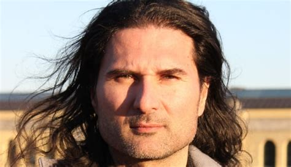

James Sears Appeal
November 16th, 2020
This is an article written by Colin Perkel for the Canadian Press. I assume this is the Canadian version of the Associated Press.
The Star:
TDC_ARTICLE_START
TORONTO - A defence lawyer was incompetent in part because he refused to argue in court that gas chambers were never used against Jews in the Holocaust, a convicted hate monger testified on Tuesday.
Testifying at his appeal, James Sears also argued the lawyer failed to call any witnesses out of fear of angering the judge or appearing anti-Semitic among his dozens of allegations against his trial counsel.
Sears, Toronto-based editor of the free publication “Your Ward News,” said it was important to him that Dean Embry did not contradict the views he had expressed in the paper.
TDC_ARTICLE_STOP
Perkel coming right out of the gates swinging his bugman arms. Flailing might be the correct term. "Convicted hate monger," that'll show 'em Colin. You tell that goy who's boss.

Propagandist Colin Perkel
TDC_ARTICLE_START
Testifying at his appeal, James Sears also argued the lawyer failed to call any witnesses out of fear of angering the judge or appearing anti-Semitic among his dozens of allegations against his trial counsel.
Sears, Toronto-based editor of the free publication “Your Ward News,” said it was important to him that Dean Embry did not contradict the views he had expressed in the paper.
“I have a right to file a truth defence here on historical facts,” Sears said, adding that he does not believe gas chambers were used in the killing of six million Jews.
Sears, and the paper’s publisher, LeRoy St. Germaine, are appealing their convictions for wilfully promoting hatred against Jews and women. Ontario court Judge Richard Blouin found them guilty last year, saying the case against them was overwhelming.
“Mr. Sears,” Blouin said, “promoted hate to a vast audience in an era where online exposure to this material inexorably leads to extremism and the potential of mass casualties.”
Sears, 57, who described himself as “halfway between a lawyer and an actor who portrays a lawyer on TV,” is handling the appeal himself before Superior Court Justice Peter Cavanagh.
Embry has maintained he did his best to provide effective, professional counsel. While he considered Sears’s views about the Holocaust to be indefensible and vehemently disagreed with much of his client’s thinking, court heard, he believed they had a shot at raising a doubt about whether the accused had been promoting hate with the publication.
TDC_ARTICLE_STOP
James Sears. Quite the character.
Alright, for those of you who don't quite understand. In Canada, there are basically two tiers of the Injustice System. The first tier, the shit-tier, is the "Human Rights Tribunals." Those have been repealed at the federal level, although they still exist in many provinces, such as British Columbia. Schlomo likes those the best, but will fall back on the Criminal Code, which prevents "Willful Promotion of Hatred". Sears was convicted of this in January 2019.
However, there is one major limitation to this statute, that really pisses off Schlomo. They have to prove that you are knowingly lying. So the court case basically revolves around them having to use talmudic bullshit and railroad you over and over again until they get the result that they want. Basically what they do is they say "there's no way that you can be telling the truth, therefore you need to prove that you are unknowingly lying."
What Sears is complaining of, and which you'll see later, is that his lawyer basically intentionally threw the case. I believe this completely, and many of our goys in Charlottesville said much the same for James Fields' public defendent.
TDC_ARTICLE_START
During his evidence, Sears said he repeatedly urged Embry to call witnesses in an effort to undermine the testimony of the prosecution’s two experts on anti-Semitism and misogyny. Embry, however, was adamantly opposed.
“I said we should leave nothing on the table and lead our own experts,“ Sears said. ”He thought again it would piss off Blouin.“
Sears, who fired Embry after the guilty verdict, said he felt stuck with the lawyer whom he described as honest and a good person.
TDC_ARTICLE_STOP
Justice Richard Blouin
Pissing off the judge is not something I would give half a fuck about when my freedom is on the line. Embry was worried about his professional career.
TDC_ARTICLE_START
In cross-examination, Crown lawyer Michael Bernstein suggested a lawyer has an obligation to pick an approach, prompting Sears to retort it was an incompetent strategy.
“Mr. Embry acted at all times professionally and competently,” Bernstein said.
“We agree to disagree.“
Bernstein produced a series of emails about planned closing submissions in which Sears praised his lawyer for having done a “really good job” and telling him, “I do trust you as much as a I trust anyone who isn’t me.” At the same time, Sears insisted Embry not say anything in “Your Ward News” was false.
“I gave him the big thumb’s up. That’s correct,” Sears said. “I didn’t want this, but I acquiesced to it. I wanted to present a full defence.”
“You did a lot more than acquiesce,” Bernstein said, quoting Sears at one point as telling Embry: “You’re looking good. We’re going to get acquitted.”
TDC_ARTICLE_STOP
Let me interject with what this propaganda piece is hiding. Sears refused to let Embry say that anything Sears wrote was false, because to do so would be to conceed defeat. That's the main way the game is rigged, as I explained above, they try to as early as possible wipe away the truth defense, so you can only fall back on "I didn't know I was lying," which you then have to prove. Complete horseshit.
And (((Michael Bernstein))) is being beyond disengenous. An email stating words of encouragement to his lawyer is proof of absolutely nothing. Sears is not a lawyer with knowledge of the full ins and outs of the law. His lawyer lead him on with a strategy doomed to fail. How was he supposed to know this? The entire reason why he gets a lawyer is because he is not a legal expert. And there is absolutely nothing out of place with him believing the lawyers chosen strategy would work, until he got convicted anyway. That's because HE IS NOT A LEGAL EXPERT.
TDC_ARTICLE_START
“At the time, I didn’t think he was incompetent but I had doubts,” Sears, who chose not to testify at his trial, explained of another email.
Embry said in an affidavit he had urged his client to take the stand but couldn’t persuade him. He also rejected many of his client’s strategy suggestions because he thought they would backfire.
Blouin last year handed Sears, who was granted bail pending appeal, the maximum one-year jail sentence, saying he would have given longer had the law allowed. St. Germaine was given 12 months strict house arrest.
The appeal is expected to continue on Thursday.
TDC_ARTICLE_STOP

Sears with St. Germaine
That was Thursday, November 12th, 2020. I'm writing this article a few days late.
Extremely maddening stuff, but I'll keep an eye on it, and give lots of updates.